Two threads
1. Old Android Phone
In a hilarious sequence of events when I was out with my friends in 2023, my phone fell down and the screen had shattered. It was a Poco F1 (amazing phone btw). I bought a new Pixel 6a and since then the Poco had been sitting in my shelf waiting for a tinkerer’s field day. That field day finally came a few months back in the year of our lord, 2026.
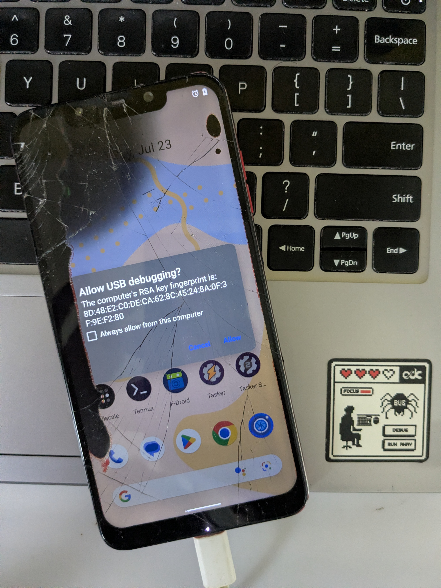
2. RSS
RSS seems like a good way to keep a stream of writing keep coming from the people I like. I can’t decide right now what RSS reader I want to use, so I’m using 4 right now. I need a sync solution, that allows me to save the feed info and read info in a remote location so that I don’t have to manually sync the 4 apps, and the potential other app that I’ll install on fedora.
This is what I wrote down in my Todo List a few months ago. I was testing out Read You, FeedFlow, Feeder, and Capy Reader. After a little back and forth with Claude, I found that I needed to self host FreshRSS or Miniflux on a server. I didn’t have a server and I didn’t wanna rent a VPS. After its years of hibernation, I pulled the Poco out. My eyes lit up. It was rooted with Magisk and it had Termux.
Info
Miniflux is a minimalist, self-hosted RSS/Atom reader (Apache-2.0, Go + PostgreSQL). Deliberately feature-light — no plugin ecosystem, no JS framework. Syncs with clients over the Google Reader, Fever APIs, and its own native REST API.
FreshRSS is a self-hosted RSS/Atom aggregator (AGPL-3.0, PHP, works with Postgres/SQLite/MySQL/MariaDB). More featureful ; WebSub push, and an extension ecosystem. Also exposes the Google Reader and Fever APIs.
Info
Termux = terminal emulator app + its own portable Debian-like package manager and toolchain, running unprivileged on top of Android’s Linux kernel.
Magisk is a free, open-source tool for rooting Android devices “systemlessly.”
Broken Display
Poco’s broken display caused false touches all over the screen. The screen was barely responsive. But luckily, after a good half hour, I was able to turn on USB Debugging from the Settings. It took another 15 minutes to tap “Allow” on the USB Debugging prompt after connecting the phone to my laptop using a USB cable.
Note
When the screen wasn’t working, I also tried to enable USB debugging through TWRP, but failed to do so.
Once USB debugging is on and the phone is connected to a PC via USB, scrcpy can be used to control and see the phone’s screen through a PC.
scrcpy --turn-screen-off --stay-awake --max-size 1920 --video-bit-rate 16M --video-codec h265Miniflux
I decided to use Miniflux, not FreshRSS, because I liked that it was minimal — which served my taste, and lightweight — which allowed it to run well on an Android.
Miniflux requires a Postgres instance. I could’ve used a remote Supabase or Neon instance but I wanted to run everything locally.
Setup Postgres
- Install PostgreSQL
pkg install postgresql- Initialize DB (first time only):
initdb $PREFIX/var/lib/postgresql- Start PostgreSQL:
pg_ctl -D $PREFIX/var/lib/postgresql start- Create database + user
createuser miniflux
createdb -O miniflux miniflux- Set Environment Variables
export DATABASE_URL="postgres://miniflux:@localhost/miniflux?sslmode=disable"
export RUN_MIGRATIONS=1
export CREATE_ADMIN=1
export ADMIN_USERNAME=admin
export ADMIN_PASSWORD=admin123
export LISTEN_ADDR=0.0.0.0:8080Run Miniflux server
- Install Miniflux
pkg install miniflux- Run Miniflux
miniflux- Acquire a wakelock for the Termux session. This prevents Android from going to deep sleep and killing Termux.
termux-wake-lock- Open
http://localhost:8080in a browser on the phone.
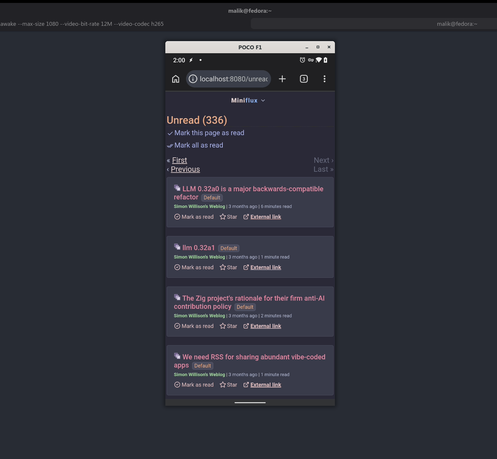
Tailscale
At this point, I could open the Miniflux UI in a browser on Poco. But I wanted to access this UI from my main phone, Pixel 6a, and my Linux Desktop. I had a constraint that I didn’t want my Miniflux server to be publicly exposed. I talked to ChatGPT about it and discovered Tailscale.
Info
Tailscale is a mesh VPN built on top of WireGuard. Instead of you configuring a traditional VPN server, opening ports, or dealing with dynamic IP addresses, Tailscale creates a private virtual network (“tailnet”) where every device you enroll gets a stable IP address (in the 100.x.x.x range) and can talk directly to every other device on that network — regardless of where they physically are or what NAT/firewall they’re behind.
The old Android phone runs a web server. Normally, reaching that from outside its home Wi-Fi would require port forwarding, dynamic DNS, dealing with your ISP’s NAT, etc. Instead, Tailscale gives that phone a fixed private IP. The Linux desktop and main phone, also on the tailnet, can just hit that IP directly, and Tailscale handles punching through NAT (or relaying traffic if it can’t) using WireGuard encryption underneath. No public exposure and no port forwarding.
Poco
- Install and create an account
- Turn ON
Pixel
- Install app
- Login with SAME account
- Turn ON
Linux
- Install Tailscale
curl -fsSL https://tailscale.com/install.sh | sh
sudo tailscale up- Login in browser.
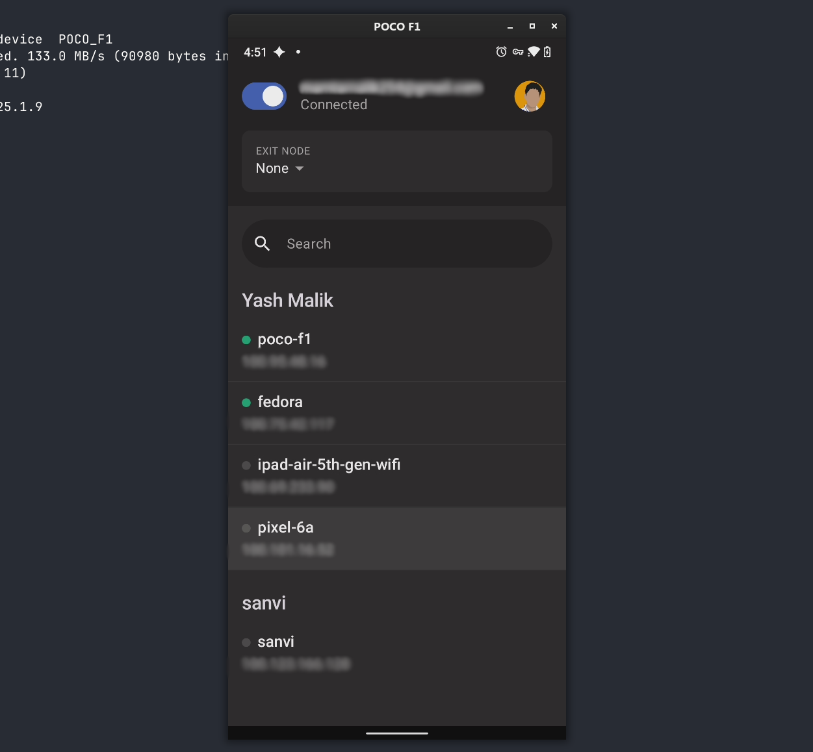
Now, all the devices are connected over tailnet. The Miniflux UI can be accessed on http://<poco-tailscale-ip>:<miniflux-port>/ from any device.
RSS Readers
I exported my existing feed from Capy Reader and imported it in Miniflux. Now whenever I want to subscribe to a new RSS feed, I can open the Miniflux UI and add it there.
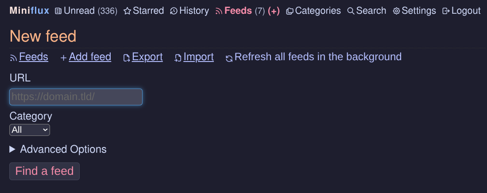
Miniflux’s UI is decent but I very much like the native Android readers that I was testing out. We can connect any Miniflux-compatible or Google Reader API - compatible client to Miniflux. Miniflux’s Google Reader API Integration can be enabled in its Settings. This allowed me to connect Capy Reader, Read You, and FeedFlow to this Miniflux instance. Now, all these client apps remain in sync. They synchronize the feeds and also read/unread information through the Miniflux Server. If I add a feed through one client, it is also visible in all the other ones.
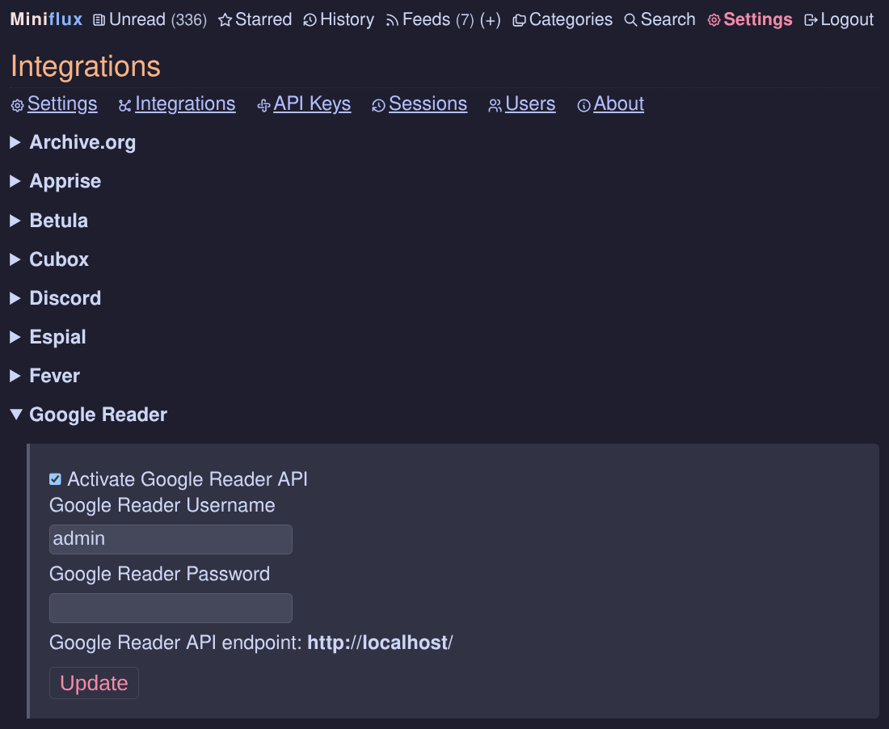
Some notes on the RSS Reader apps:
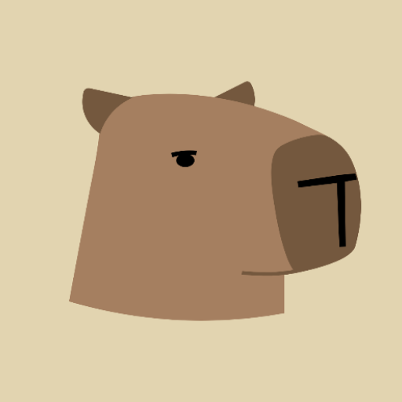
-
Read You: Allows multiple accounts at once. Connects to Miniflux using Google Reader API.
-
Capy Reader: Only allows one account at once. I had to remove the local account. Connects to Miniflux natively.
-
FeedFlow: Only supports one account at once. Connects to Miniflux natively.
-
Feeder: Deliberately local-only app.
-
Linux: I’ve decided to use the Miniflux Web UI itself instead of some other app mainly because it’s in-browser, and I don’t want to have another app.
Tip
Some cool themes for miniflux: https://github.com/TaylanTatli/MinifluxThemes
I found some really awesome Miniflux customizations by Abhinav Sarkar
Multiple Users
Tailscale supports some small number of seats from different accounts in the same tailnet in its free tier. Miniflux allows adding multiple users. The hosted instance of Miniflux can be used by anybody, but adding users in Miniflux is only allowed for admins and this action is not self-serve.
Note
To go one step further in self hosting, one can even use Headscale instead of using Tailscale.
Boot Proof and Wakelocks
I wanted my Miniflux server to survive device reboots. Also, Android devices are battery constrained, so naturally the OS tries to kill Termux for battery-optimization. We can deploy a few tricks to avoid this.
First is Termux-Services, which is a set of scripts for controlling services. Instead of putting commands in ~/.bashrc or ~/.bash_profile, they can be started and stopped with termux-services. We’ll use it to control Postgres and Miniflux.
We combine Termux-Services with Termux-Boot, which will run scripts immediately after device is booted. Whenever the phone restarts our services, Postgres and Miniflux, will start automatically.
Further, a wakelock can be acquired for the Termux session as soon as the device boots.
On Poco’s Termux:
- Install Termux-Services
pkg install termux-services- Enable Postgres
sv up postgres
sv enable postgres- Verify
sv status postgres- Test DB
pg_isready- Create the script to be run by Termux-Services. This script checks if Postgres is ready, and starts Miniflux.
mkdir -p $PREFIX/var/service/miniflux
nano $PREFIX/var/service/miniflux/run- Paste the following into the newly created file:
#!/data/data/com.termux/files/usr/bin/sh
# wait for postgres
until pg_isready; do
sleep 2
done
export DATABASE_URL="postgres://miniflux:@localhost/miniflux?sslmode=disable"
export RUN_MIGRATIONS=1
export CREATE_ADMIN=1
export ADMIN_USERNAME=admin
export ADMIN_PASSWORD=admin123
export LISTEN_ADDR=0.0.0.0:8080
exec minifluxNote
We didn’t need a custom script for Postgres because it already ships its own.
- Make the script runnable
chmod +x $PREFIX/var/service/miniflux/run- Start Miniflux
sv up miniflux
sv enable miniflux- Verify
sv status miniflux- To allow Termux-services to start services on boot:
mkdir -p ~/.termux/boot
nano ~/.termux/boot/start-services- Paste this in the newly created file
#!/data/data/com.termux/files/usr/bin/sh
termux-wake-lock
. $PREFIX/etc/profile- Make it runnable
chmod +x ~/.termux/boot/start-servicesNow, Android won’t kill our server and the database. Even if the battery dies and the phone restarts, everything spins up again automatically.
Battery Notifications
Since I don’t daily drive this Poco, it’s easy for me to forget to charge it and let the battery die. I’d only know it when I didn’t see my feed refresh. To avoid this, I wanted the Poco to send me a notification whenever it’s about to die. Or better yet, regularly send its battery and charging updates to my Pixel.
First, I explored if I could use UnifiedPush and ntfy. But I then found a much cleaner way. A little more than a year ago, I had bought Tasker to automate syncing my Obsidian notes across devices.
Tasker, among many, many other things, can be used to run arbitrary scripts on a schedule. It can also be used to expose an HTTP endpoint. To get the status of the device’s battery, I used Termux-battery-status. And, the AutoNotification plugin for Tasker allows for creating really fancy notifications.
Poco
I used Termux to put this script in Poco’s filesystem at /data/data/com.termux/files/home/heartbeat/heartbeat.sh:
#!/data/data/com.termux/files/usr/bin/bash
data=$(termux-battery-status | jq '{ percentage:
.percentage, status: .status, health: .health,
temperature_c: (.temperature / 10), plugged:
.plugged, current_now: .current, voltage:
.voltage
}')
curl -X POST http://<Pixel-IP>:1821/battery \
-H "Content-Type: application/json" \
-d "$data"The script sends an HTTP POST request to Pixel’s Tailscale IP, with the payload containing the battery information.
On Poco, I created a Tasker profile which triggers every 10 minutes.
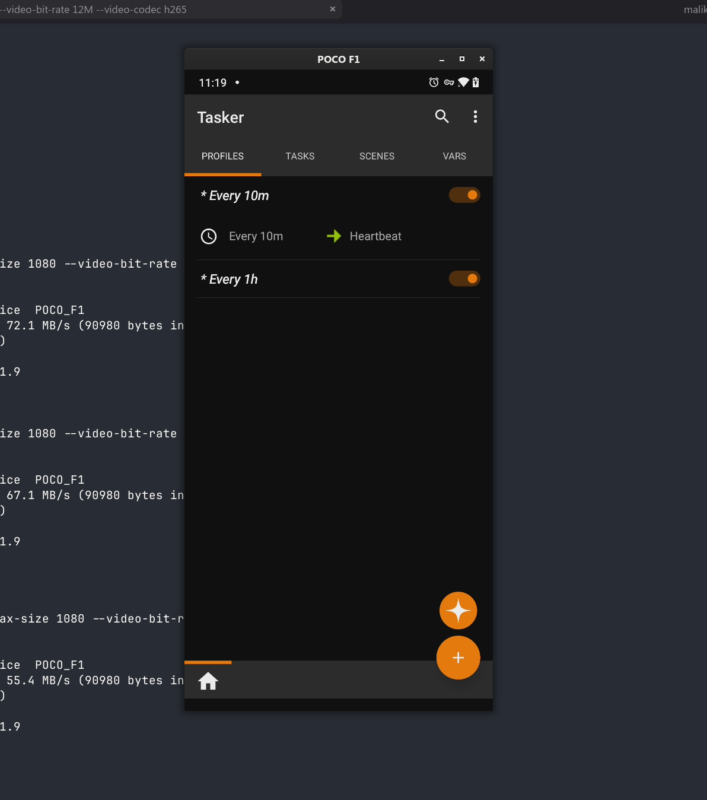
This profile runs a task, which has a single action which in turn runs our script.
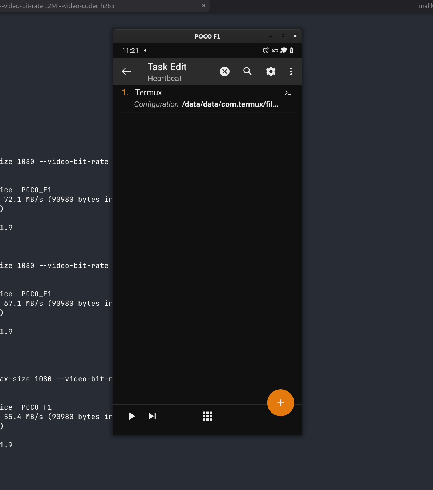
Pixel
Now, to receive that HTTP request on Pixel:
- Created an
HTTP Requestprofile on port1821, withPOSTmethod, on path/battery. - This profile triggers a task.
- The first action in that task parses the data and sets individual variables, passes them to the next action - AutoNotification.
- The AutoNotification action puts this data up in a fancy notification.
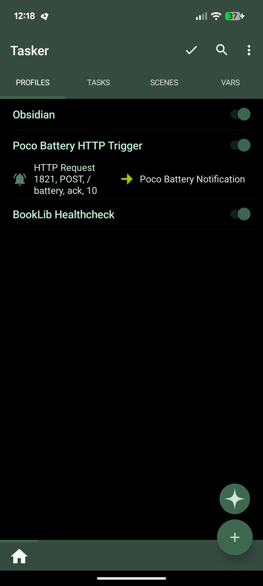
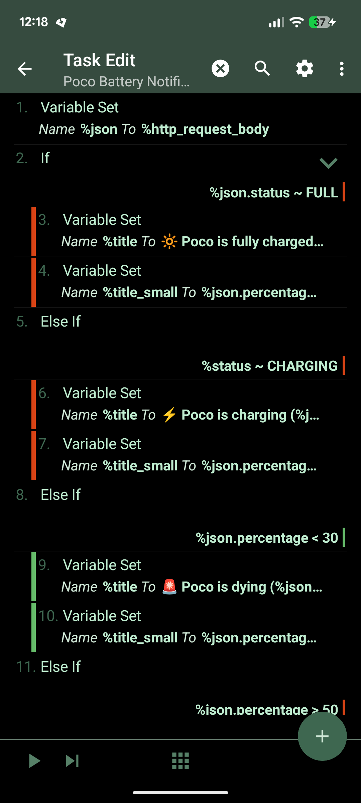
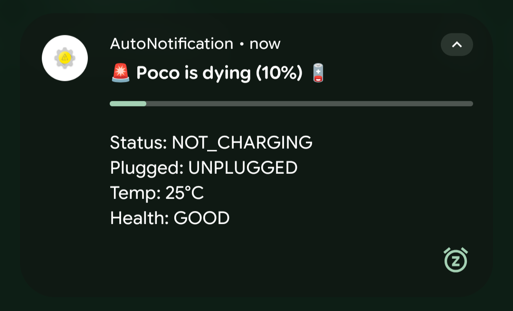
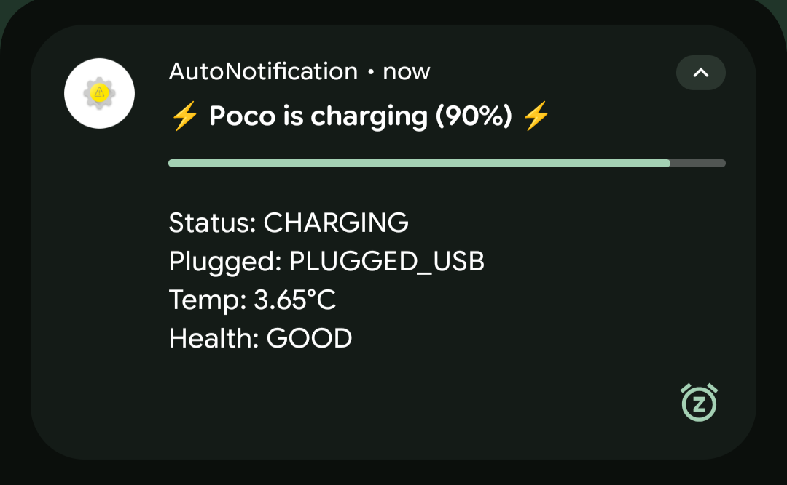
Epilogue
Finally I can enjoy my reading on any device I want, and any Reader I want, without worrying about the sync. I also connected my iPad to the Tailscale network where I use the Miniflux Web UI for reading. The reason I went through all this trouble — other than that I like this sort of hacky stuff — is that I am actively decreasing my dependence on the recommendation algorithms by the Attention merchants at BigPlatform™. I am making it as frictionless as possible as for me to enjoy reading on my RSS Reader, and not open up BigPlatform™.
Quote
[…] a rotting WWW, BigPlatform and their algorithms cannot be trusted to be the gatekeepers of discovery of good resources buried in the noise; that conventional web search is dying and we need to prepare alternate forms of discovery for the inevitable tipping point; that we need to start thinking of ways to separate out the 0.0001% signal from the 99.9999% noise to make them accessible.
— Kailash Nadh, Decentralised Open Indexes for Discovery (DOID)